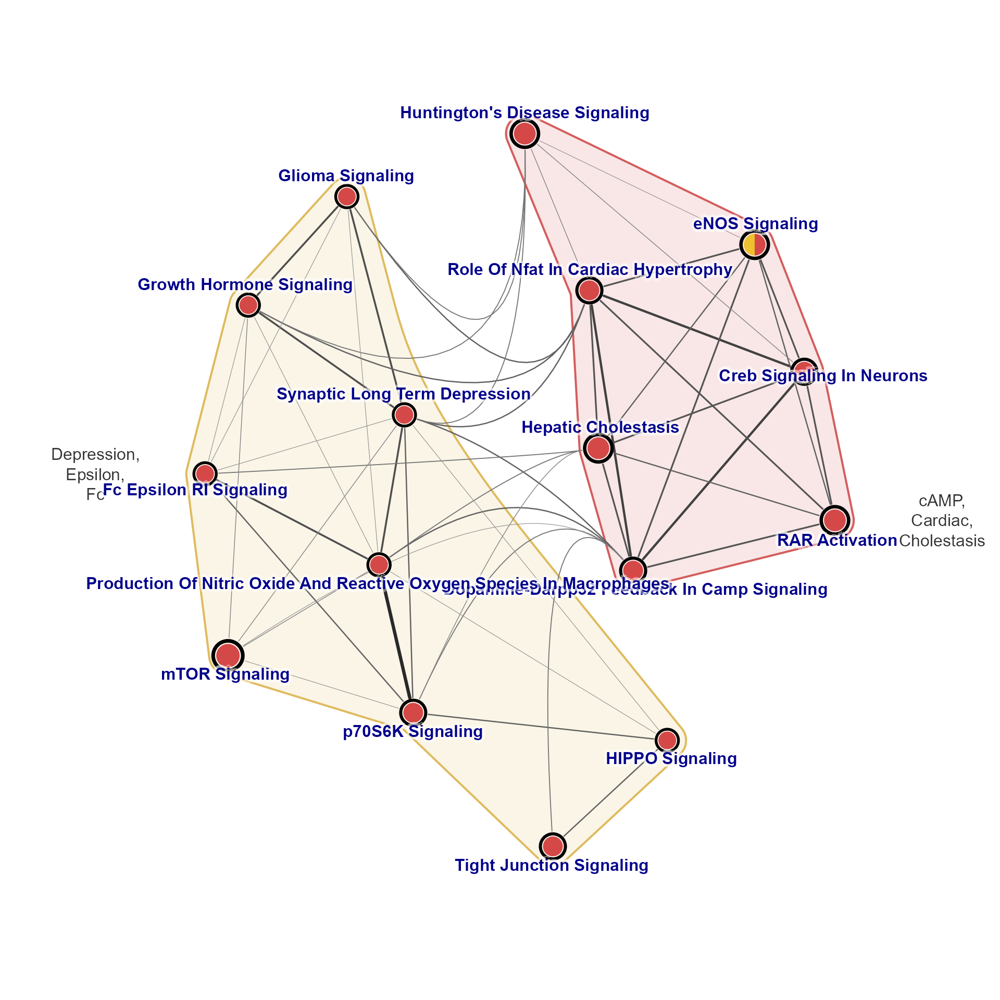
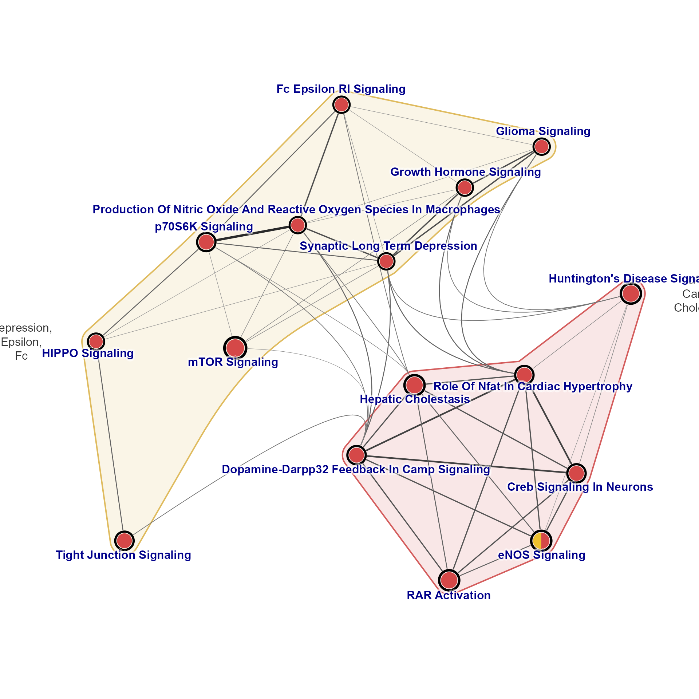
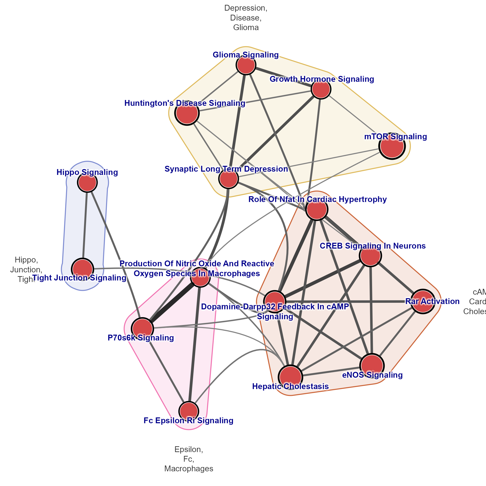

Convert multiEnrichMap mem output to EnrichmentMap emap
Usage
mem2emap(
mem,
overlap = 0.2,
p_cutoff = NULL,
min_count = NULL,
colorV = NULL,
cluster_function = igraph::cluster_walktrap,
cluster_list = NULL,
num_keep_terms = 3,
keep_terms_sep = ",\n",
repulse = 3.3,
remove_singlets = FALSE,
color_by_nodes = FALSE,
size_by_genes = TRUE,
median_size = 5,
max_size = 25,
apply_edge_width = TRUE,
max_edge_width = 20,
min_edge_width = 0.5,
apply_edge_color = apply_edge_width,
apply_direction = TRUE,
direction_max = 2,
direction_floor = 0.5,
border_lwd = 3,
seed = 123,
spread_labels = TRUE,
label_min_dist = 2.5,
y_bias = 10,
vertex.label.font = 2,
use_layout_components = FALSE,
use_shadowText = TRUE,
do_express = FALSE,
do_plot = FALSE,
verbose = FALSE,
...
)Arguments
- mem
Memoutput frommultiEnrichMap()- overlap
numeric, default 0.2, value between 0 and 1 with Jaccard overlap coefficient required between any two pathways in order to create a network edge connecting these two pathways.Jaccard overlap coefficient is reciprocal of Jaccard distance, using
(1 - Jaccard_distance), where Jaccard_distance is calculated withdist(x, method='binary')with incidence matrix.overlap=0.2is default, which specifies roughly 20% overlap in genes shared between two pathway nodes, relative to the union of genes in those two pathway nodes.Note these genes must be involved in enrichment, and therefore does not use all possible genes annotated to a pathway. Therefore, connections are only created with enriched genes are shared between pathways.
- p_cutoff
numericthreshold used for significant enrichment P-value. The default NULL uses the value in thememobject. This cutoff, together withmin_count, define which nodes are included, and the color fill for those nodes.- min_count
integerthreshold for minimum genes involved in enrichment in order for a pathway to be considered significant during this analysis. When NULL it uses the threshold inmem.- colorV
charactervector of R colors used for each enrichment. Default NULL uses colors defined inmem.- cluster_function
function, defaultigraph::cluster_walktrap, used to clusterigraphnodes in the resulting network graph. It is used to enhance the visual summary.This function is not used when
cluster_listis supplied.
- cluster_list
listdefault NULL, optional list of pathway clusters, containingcharactervectors ofigraphnode/vertex names. It will be used instead ofcluster_functionwhen supplied.- num_keep_terms
integer, default 3, number of text terms to keep for each pathway cluster, used together withcluster_function. Common words are removed, remaining terms are sorted by decreasing occurrence, then used to summarize each cluster.- keep_terms_sep
characterstring, default is comma-newline, used to separate terms, used together withnum_keep_terms.- repulse
numericvalue passed tolayout_with_qfr(), default 3.3.Use repulse 'FALSE', 'NULL', or '0' will skip the layout, which is used by
mem_find_overlap()to iterate numerous overlaps without spending time on layout each iteration.
- remove_singlets
logical, default FALSE, whether to remove pathway singlets which have no connections to other pathways.Using TRUE will help simplify busy figures, at the expense of being less complete.
- color_by_nodes
logical, default TRUE, whether to colorize pathway clusters using node colors in each cluster. Note that a mix of colors often turns brown, so this feature has unpredictable benefit.- size_by_genes
logicaldefault TRUE, whether to size nodes proportional to the number of genes involved in enrichment.- median_size
numericused whensize_by_genes=TRUEto define the median size, default is 5.- apply_edge_width
logicaldefault TRUE, whether to apply edge width based upon the edge weight, which represents the Jaccard overlap.- max_edge_width
numericmaximum edge width, used whenapply_edge_width=TRUE. Default 25 is intended to represent roughly the full size of a node.- min_edge_width
numericminimum edge width, used aftermax_edge_widthhas been applied. The minimum is applied as a noise floor, so that any edge at or below themin_edge_widthis set to this width. All edges above this width are left as-is.- apply_edge_color
logicalwhether to apply edge color based upon the edge weight, which represents the Jaccard overlap. The default matchesapply_edge_widthso that they are applied together.- apply_direction
logicaldefault TRUE, whether to apply direction to the node border color, when supplied. Used withdirection_maxanddirection_floor.- direction_max
numeric, default 2, indicating the directional score at which the maximum color is applied. Typically when using some derivative of z-score to represent directionality, values at or above 2 are effectively "maximum".- direction_floor
numericdefault 0.5, the minimum directional score for any color to be applied, below which values are considered "non-directional". Typically when using some form of z-score, a value at or below 0.5 may be considered "not directional."- border_lwd
numericline width of node borders, used to convey any direction associated with enrichment.- seed
numericpassed toset.seed()via thelayout_with_qfr()layout algorithm, default 123.- spread_labels
logicaldefault TRUE, whether to callspread_igraph_labels().- label_min_dist
numericdefault 2.5 defines the label distance used inspread_igraph_labels().- y_bias
numericdefault 10, passed tospread_igraph_labels().- vertex.label.font
integerto define the font style, default 2 sets bold font; alternatively use 1 for normal font.- use_layout_components
logicaldefault FALSE, whether to calligraph::layout_components()to combine multiple network components, rather than callinglayout_with_qfr()on the overall graph object.- use_shadowText
logicaldefault TRUE, whether to render node labels usingjamba::shadowText(). This setting is also stored in the graph attributes and is used byjam_igraph().- do_express
logicaldefault FALSE, when TRUE it skips a number of aesthetic steps. This option is intended mainly formem_find_overlap()to perform more rapid iterative evaluation of overlap thresholds.- do_plot
logical, default FALSE, whether to render the resulting plot usingjam_igraph().- verbose
logicalwhether to print verbose output.- ...
additional arguments are passed to
jam_igraph()to customize the network plot, used whendo_plot=TRUE.
Value
igraph object with an Enrichment Map, nodes are pathways,
and edges are defined by the Jaccard overlap of genes involved
in enrichment of each pair of pathways.
Edges are defined only when the Jaccard overlap is at least
overlap.Node sizes are proportional to the number of genes involved in enrichment, with median node size defined by
median_size.By default, edge width and color is defined by the overlap, ranging from 0 to 1. Graph attributes store the
max_edge_widthwith edge width at Jaccard overlap 1; andedge_colrampas a function to convert weight to color, and can be used to create a color legend.
Details
This function is currently In development.
This function is intended to convert mem output from
multiEnrichMap() into an EnrichmentMap igraph format
which represents the statistical enrichment support from each
pathway enrichment.
This function can apply P-value thresholds using the input mem,
or using a custom value.
A node community detection function is applied by default which may help visualize subgroups of nodes. When defined, the communities are used to define nodegroups for edge bundling.
As of version 0.0.116.900, node size also scales the border
line width for 'frame.width' and 'pie.border.lwd', so that
the line width defined by border_lwd matches median_size,
and is scaled proportionally by node size.
See also
Other jam Mem utilities:
Mem-class,
MemPlotFolio-class,
fixSetLabels(),
mem2cnet()
Other jam igraph functions:
communities2nodegroups(),
drawEllipse(),
edge_bundle_bipartite(),
edge_bundle_nodegroups(),
fixSetLabels(),
flip_edges(),
get_bipartite_nodeset(),
highlight_edges_by_node(),
igraph2pieGraph(),
label_communities(),
mem2cnet(),
nodegroups2communities(),
rectifyPiegraph(),
removeIgraphBlanks(),
subsetCnetIgraph(),
subset_igraph_components(),
sync_igraph_communities()
Examples
emap <- mem2emap(Memtest, min_count=2, max_edge_width=5, overlap=0.33)
jam_igraph(emap)

emap2 <- relayout_nodegroups(emap, final_repulse=4, y_bias=10, label_min_dist=2.5)
jam_igraph(emap2)

emapB <- mem2emap(fixSetLabels(Memtest), min_count=3,
overlap=0.35, median_size=10,
apply_edge_width=TRUE, max_edge_width=15)
jam_igraph(emapB)
